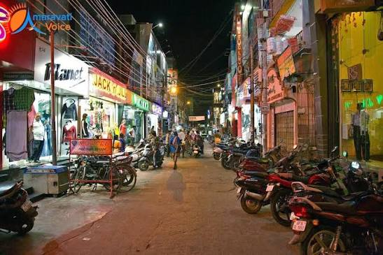
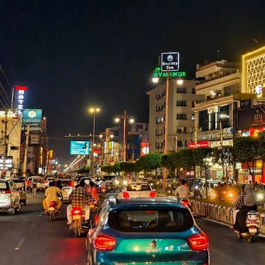

01 — STREET SHOPPING
Besant Road
A lively shopping street filled with clothing shops, accessories and everyday finds. Explore sarees, bangles, jewellery, footwear and more as you browse the busy local market.
Explore location →06 — SHOPPING · EXPLORE THE CITY
From busy shopping streets to traditional markets, discover the local side of shopping in Vijayawada.

01 — STREET SHOPPING
A lively shopping street filled with clothing shops, accessories and everyday finds. Explore sarees, bangles, jewellery, footwear and more as you browse the busy local market.
Explore location →
02 — CITY SHOPPING
Explore one of Vijayawada's major commercial stretches, with retail outlets, fashion stores and lifestyle shopping. It's a good area to browse different shops while exploring the city.
Explore location →03 — TRADITIONAL MARKETS
Discover Vijayawada's older market area, where traditional shops and wholesale businesses offer a variety of textiles, household goods and everyday shopping essentials.
Explore location →A LITTLE LOCAL TIP
Compare prices, check product quality and carry a reusable shopping bag. Busy markets can get crowded, especially during weekends and festival seasons.
DISCOVER THE LOCAL SIDE OF VIJAYAWADA